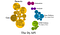
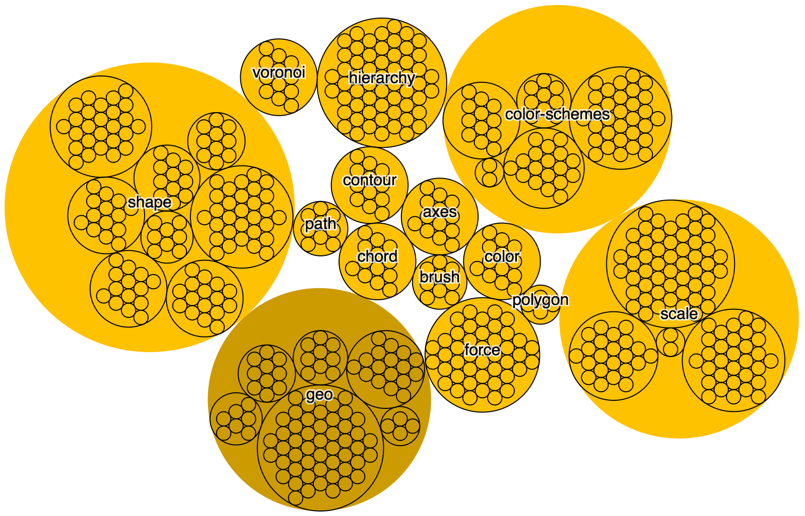
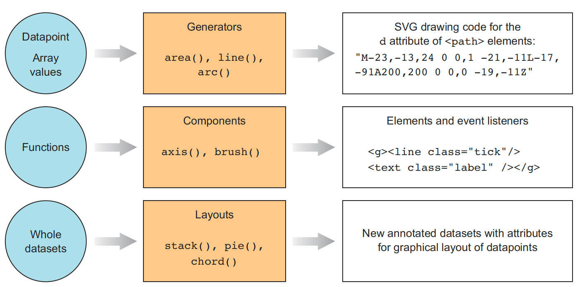
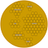

Understanding that can help you learn it (and unlearn it)

D3.js is an incredibly successful library yet there’s a disconnect between what people think D3 does and what it actually does. As a result, learning D3 is intimidating and confusing. By better understanding its structure and separating it into more manageable pieces, it can be easier to choose which parts of the library to learn and which parts to avoid — key lessons not only for D3 novices but for expert users like myself that might want to reexamine how they use D3.
I wrote a book about D3 (twice), so I’m sure you’re thinking that this is some kind of clickbait title and that I’m going to make a subtle play on words or say something like D3 is not a Data Visualization Library it is THE Data Visualization Library. But no, along with key functionality that lets you do data visualization, D3 also consists of other functionality that is only tangentially related to data visualization. You might be surprised by that given what the D3 home page looks like.
But much of D3 has little to do with graphics and many of the parts that do aren’t necessary to learn to create effective data visualization. We can take the D3 API page and visualize it as a hierarchy by graphically nesting the functions into the sections and subsections described in the documentation. Here’s how d3-selection looks using this method:
Along with doing this for the entire docs, I grouped the functionality into a few broad semantic categories. Obviously, this method of visualizing the API doesn’t account for true complexity because some sections have many small nearly duplicate functions whereas others only have a few complex functions but it gives a reasonable graphical overview.

The size and complexity of the library has always made it difficult to teach and almost every lesson and book (mine included) focuses first on establishing the JQuery part of the library, which is all about DOM manipulation to create and manipulate elements on a web page.
But take a look at that diagram above. If you want to learn how to use D3 for data visualization you don’t need to learn anything on the right hand side and you almost certainly don’t need to learn everything on the left. In fact, if you do, you might be setting yourself up for a worse chance at success in the long run. I’ll explain as I walk through the areas of the D3 API.
THE JQUERY PARTS
So much of what you read in D3 tutorials focuses on its DOM manipulation functionality. This includes the select/enter/exit/update pattern you’ve probably seen a thousand times but also convenience functions for dragging, zooming, dispatching events and even using Fetch (the D3 flavor of which is unsurprisingly called d3-fetch).
There are useful and interesting functions (like d3-zoom) along with particular D3 flavors of existing ES2015 functionality if you prefer the D3 way of writing code. But this whole section is unnecessary if you’re using something like Vue to create your DOM elements and actively conflicts with other forms of DOM management necessitating hacks or mixed systems. If you’re working in a team environment, it’s far more likely the rest of your team will be more familiar with other methods of DOM management than D3, so there are good reasons to avoid this aspect of D3 altogether.
It stands to reason why this is so tied up with data visualization: You can’t visualize things unless they actually exist (in the DOM) but because it is so prominent in the API it comes across to new audiences as if D3 can only be used if you use D3 to manipulate the DOM. It also makes sense given that when D3 was originally being developed (v3 was released in 2013). There’s another reason for selections and that’s tied to animation, which I’ll get into below.
THE LODASH PARTS
There’s another significant portion of the library that exposes a host of functions that are a part of the data transformation, cleaning and formatting process. Some of them, like the min and max functions in d3-array are syntactic sugar for operations that can be handled with vanilla JavaScript. Others, like set and map are D3 flavors that aren’t quite the same as ES2015 Set and Map.
The formatting utilities are there if you like python style numerical formatting, something I find less intuitive than numeral, as well as time formatting, which in all my experience with D3 I’ve never used preferring moment or (before Moment and now more recently) vanilla JavaScript time formatting options. There are, additionally, some interpolation functions that are used internally to power the scales and color functionality, as well as a host of random number generators.
You need to know how to measure and format data to do data visualization but there are many ways to do that, often times in the process leading up to creating the dataset. There are also other libraries that might be more commonly used in industry or native ES2015 functions that larger teams will have a better chance of understanding than D3 particular functions.
THE ANIMATION PARTS
d3-transition is one of the most convenient ways to animate graphical elements on the web and is intimately tied to d3-selection. But I’ve found that animation in data visualization, while impressive and eye-catching, is a much lower priority than understanding how different chart types present data, how to properly design charts, understanding form in data visualization, and other aspects of data visualization practice. Given that you need to use D3 selections to get access to animation via d3-transition it’s a heavy investment that might be better spent on leveling up in other ways.
Another aspect of animation that makes it optional as far as learning to do it with D3 is that there are other libraries that do good animation, like GSAP, as well as animation solutions that are native to the method you (or your team) are using for DOM management.
THE DATA ANALYSIS PARTS
We’re getting closer to data visualization here. Parsing data like CSVs and its various flavors (tab-delimited, comma-delimited) is an important part of data visualization and I haven’t seen a library that does it so easily as d3-dsv. But much of my production data comes processed and available as JavaScript data structures and doesn’t require processing CSVs. d3-quadtree is an amazingly fun and useful library for spatial search but its direct application is pretty rare in the real world (under the hood quadtrees are used for things like the network diagrams built with d3-force). Binning and nesting functions from d3-collection and d3-array also fall into this category.
THE DATA VISUALIZATION PARTS

The real meat of D3 for data visualization is in its functions for decorating data with drawing instructions, creating new drawable data from source data, generating SVG paths and creating data visualization elements (like an axis) in the DOM from your data and methods. It’s useful to separate the graphical functionality of D3 into generators, components and layouts. Since layouts and generators don’t produce DOM elements but only raw material for creating DOM elements, you still need to pass the data they create to the DOM, a process I describe using React in an earlier article.

Understanding not only how to use layouts and generators but also how they work is key to understanding data visualization. Because most complex data visualization is combinatorial, understanding how these different functions can interact to produce a different kind of chart is key to understanding how to design data visualization well. It’s unfortunate that people learning D3 spend so much time learning its DOM management functionality and have only a superficial understanding of the actual data visualization functionality.
D3’s Data Visualization Functions
d3-shape has a bunch of really valuable functions that draw SVG paths from arrays of data that are useful in themselves and as models of how you can build your own generators. Its built-in canvas rendering functionality is nice but there’s an existing solution for that in vanilla JavaScript:Path2D.
Besides the graphical functions, scales and interpolators don’t create graphics but are key to projecting graphics into visual space (whether within the boundaries of a chart or with the color, stroke-width or other channels used to communicate visually). Scales don’t just interpolate numbers to numbers but transform from one mode to another (such as with quantizing scales) and expose convenience functions like calculating ticks suitable for axes.
d3-hierarchy has hierarchical layouts (like dendrograms, treemaps and sunbursts) but also a hierarchical data structure that provides convenient ways to slice up and analyze hierarchical data.
d3-force has a simple constraint-based force-directed layout that is effective and generic enough to be used in most network visualization.
d3-color and d3-color-schemes are not the only way to deal with color and if you’re just starting out, I’d suggest working with chroma.js rather than D3’s color utilities.
The axis and brush functions in D3 suffer from the same problem that d3-selection does in that they reach into the DOM and create elements themselves. That means they’re harder to integrate into an application that’s using Vue or React to manage the DOM.
Some functionality, like the canvas-to-SVG of d3-path, can be useful in some corner cases, but the real value of learning D3 comes from learning the different visualization methods, like hulls, contours, voronoi polygons and chord diagrams. Understanding how they take different forms of data and derive drawing instructions can help you to understand how data can be transformed for your applications and how those transformations interplay.
THE GEO PARTS

While definitely a part of the data visualization area of D3, d3-geo is likely too specific and not as easily integrated across different design cases as the broader data visualization pieces. Its popularity is well justified as D3 has become something of a playground for neogeographers experimenting with cartograms, raster reprojection and other geographic geekery.
It consists of a million projections, an entire projection streaming system, functions for translating GeoJSON to paths, finding centroids and bounding boxes (use d3-polygon if you want this for generic geometries). A lot of spherical math and spherical shapes and steradians.
D3 lets you make simple choropleth maps easily but with a high learning curve if you’re not a GIS professional or a map nerd. Given the innovations happening in the WebGL mapping space, if you’re looking to make maps you might want to first explore kepler.gl or Mapbox.
Why this matters
People have a hard time learning D3. If you’re expected to learn the DOM manipulation part first it can be a barrier especially when you’re working on a project where that’s already being handled. The point of learning D3 is to learn how to create data visualization products, and that’s really just part of the library that you can focus on instead of the supplemental functionality.
It limits the combinatorial quality of D3 if people think of it as a self-contained ecosystem. Data visualization and charts are about mapping data attributes to visual features. That should be the focus of anyone trying to learn a library that does data visualization, not DOM management. There are lots of tools for managing the DOM and all of them can integrate the data visualization functions in D3, which will only increase the amount of sophisticated data visualization being done.
You might find using D3 for everything to be particularly suitable for your practice. That’s great! You should buy my book, since it explains how to use all those bits. But I’ve found that this is often not the case with people coming to learn D3 and as a result the data visualization community loses out on contributions from developers who really just wanted to do data visualization. For them, I hope I’ve done a decent job of defining where they should look and what they should focus on when it comes to learning D3.
For those who have already mastered D3, I hope this has helped describe just how complex and eclectic and opinionated the library can appear to outsiders (And I didn’t even get into all the function chaining…). Let’s not assume that the way we learned or use D3 is the only way to do it, even if that means evolving our practice.